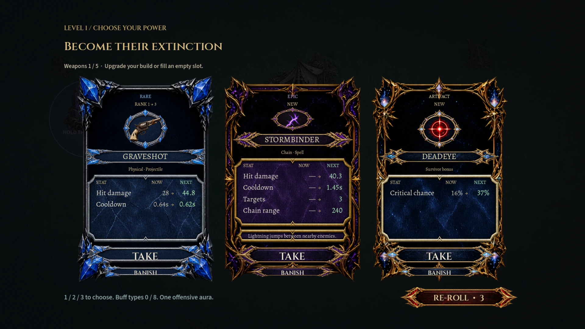
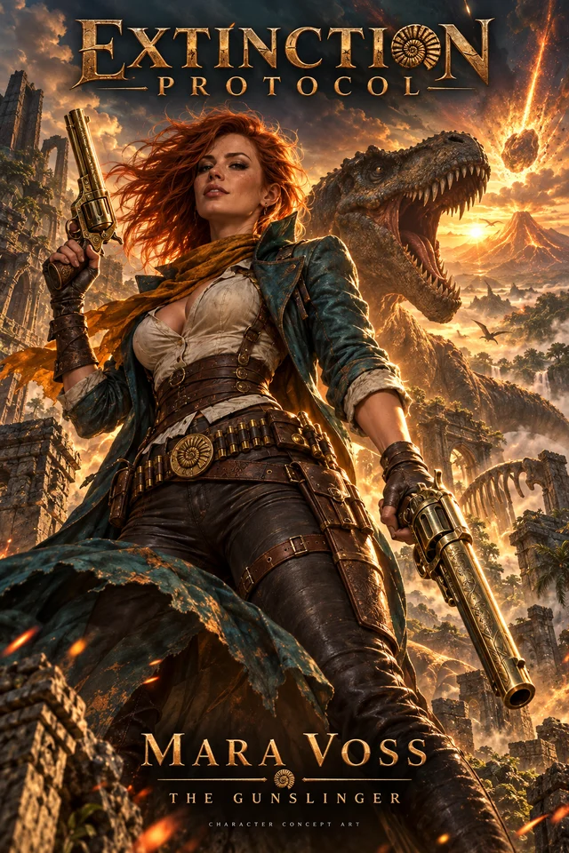
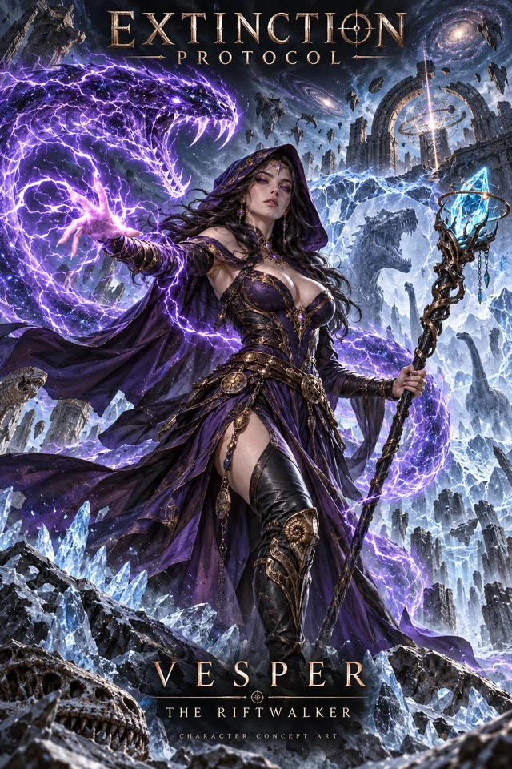
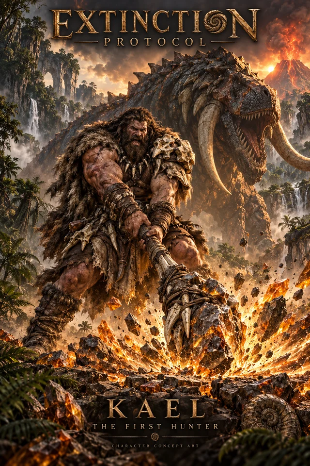
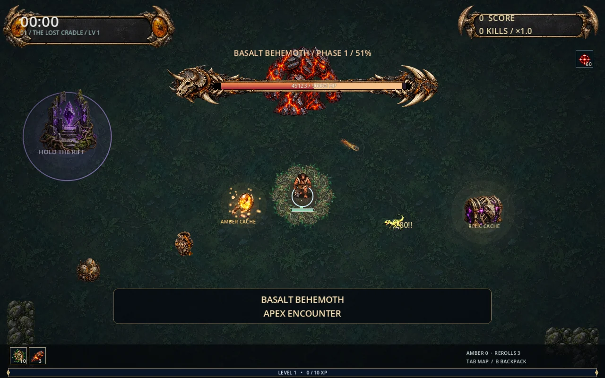
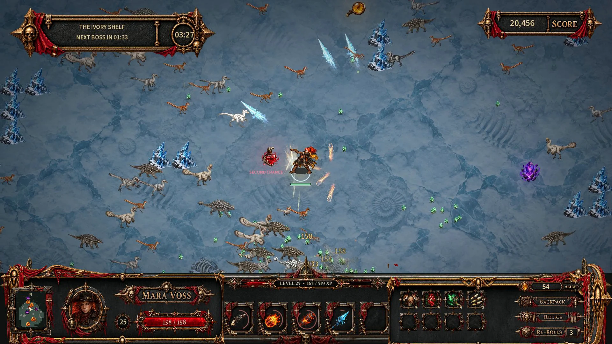
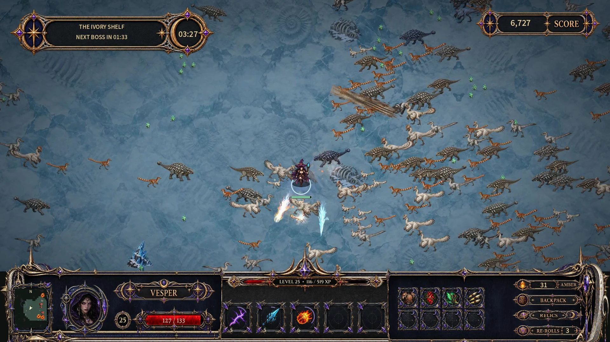

BUILD SOMETHING UNREASONABLE
Five slots. Countless possibilities.
Choose your weapons, chase their evolutions, and find relics that change the way your build works. Every upgrade is another decision. Every chest is another chance.
HOBBY PLAYTEST · 0.13.0
The end of the world
has a health bar.
Real gameplay · Development preview of ongoing UI polish. The new UI is a first iteration and will have issues.
Development preview · Mara Voss: gunfire and orbiting blades against the horde.
Seven fresh development captures of real gameplay and upgrade cards. These preview ongoing HUD polish beyond the downloadable 0.13.0 build. The UI is a first iteration and will have issues.
HUMAN CURIOSITY. AI ASSISTANCE.
Extinction Protocol is a human-directed experiment built extensively with AI assistance, including programming, artwork, and procedural music and sound creation.
It is an evolving hobby game, with human playtesting and creative direction. We are sharing the journey—and the game—as it grows.
A WORLD OUT OF TIME. A SPECIES OUT OF LUCK.
Move. Your weapons do the rest. Carve through escalating hordes, collect relics, and turn a handful of weapons into an extinction-level build. Defeat each biome's boss, cross the rift, and face what waits at the end.
Guns, forbidden magic, and prehistoric muscle. Larger-than-life, AI-generated promotional concept art—not gameplay screenshots.

View full-size poster ↗The Gunslinger

View full-size poster ↗The Riftwalker

View full-size poster ↗The First Hunter

Choose your weapons, chase their evolutions, and find relics that change the way your build works. Every upgrade is another decision. Every chest is another chance.

Read their attacks, find your opening, and earn the next rift. Stay behind to gather the spoils—but the longer you linger, the harder the world pushes back.

Three expedition maps, each with three biome sections. Discover survivors and equipment, bank amber, and return with permanent upgrades.
DAILY CHALLENGE
The same daily seed. Randomly chosen rewards. The familiar reward reel decides what you get—then you make it work.
Push through more circuits and see how long you last. Records are local to your computer; Steam leaderboards and Cloud saves are not active.
LATEST PLAYTEST / 0.13.0

A new view of the expedition.
Illustrated character-themed HUDs bring the minimap, health, experience, carried items and backpack into one bottom frame. Upgrade cards and their action buttons have received a matching art pass.
First iteration: the new UI will have issues. Layout, scaling and visual polish will continue to improve; the experience bar needs further work.
Wider minimap coverage and shared chest, location and pickup markers make supplies easier to find. Separate volume sliders let you tune effects, music, voices and cinematics.
Your existing saves are retained across updates.
Read the spoiler-free release notes ↗FIRST ITERATION. KEEP THE FEEDBACK COMING.
Try the new HUD at your usual resolution and HUD scale. Tell us about clipped text, awkward spacing or map markers that are hard to read. Inventory overflow stays available through pages and the backpack.